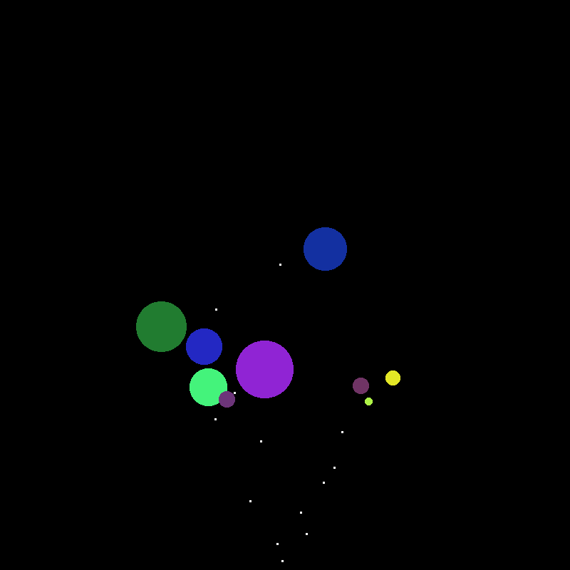

Functional Classes
Jed Rembold
March 18, 2026
Last Wednesday before Spring Break!
- Scan the QR code or go to https://tools.jedrembold.prof/daily
- Fun group question: We’ve all had experiences with people asking questions or “mucking about” with information we feel is private to us. What is one general thing in your life that you’d like to “prepend an underscore to” to publically signal: this should be private?

Quick Announcements
- ImageShop is out!
- Due after break, but don’t put it off!
- Sections today or tomorrow! Make sure to attend!
- What do we want a short video about on Friday?
- More dunder methods? (adding, comparing, etc)
- Basic inheritance
Daily LO’s
- Practice defining instance methods
- Use
selfproperly within our method definitions - Write some getters and setters
- Print out our custom objects in a useful way
Group Problems
Problem 1: Demo Tracing
What would be the output of the last print statement in the code to the right?
- True
- False
- Error: Index out of range
- Error: Python will not know how to compare the new Demo objects
class Demo:
def __init__(self):
self.x = []
def add(self, v):
self.x.append(v)
def get_x(self):
return self.x
A, B = Demo(), Demo()
C = B.get_x()
A.add(3)
B.add(3)
C.append(A)
print(A.get_x() == B.get_x())Problem 2a: Smart Bulbs
- This is a coding problem. Work in pairs or trios on a single computer, and discuss your algorithm BEFORE YOU WRITE ANY CODE.
- Smart lightbulbs are used all over these days. Suppose we wanted to write some code to help manage some smart bulbs?
- Your task:
- I’ve provided a starting class for you already in the repo for today
- Add a method
turn_onthat sets the boolean toTrueand the brightness to 100 when called - Add a method
turn_offthat ets the boolean toFalseand the brightness to 0 when called
Problem 2b: Staring at the Light
- Swap who is typing!
- Implement a
__repr__method - It should return a string like
'[Kitchen: ON @ 100%]'or'[Kitchen: OFF]'- F-strings will be your friend to format the info!
- Bonus: Try switching the method name to
__str__and running it to compare the output
Problem 2c: Flip-Flops
- Swap who is typing!
- Write a method called
togglewhich toggles the state of the light- If the bulb is on, turn it off
- If the bulb is off, turn it on (full brightness)
- Make sure the brightness reflects the current state of the bulb!
Problem 2d: Getting Dimmer
- Swap who is typing!
- Write a getter method (
get_brightness) to return the current bulb brightness level - Write a setter method (
set_brightness) which takes a new percentage as an argument- If the level is greater than 100, cap it at 100
- If the level is less than 0, cap it at 0
- Update the boolean to reflect if the light is now on or off
An Explosive Demo
The Objective
- Suppose we want to write a program to simulate a fireworks show in PGL
- Fireworks should travel upward on the screen for some random time at some random angle until they explode
- When they explode, they should grow in a circle of some random color to some random size
- That would be a LOT of information to track in a bunch of lists! So let’s use classes to aggregate and encapsulate the behavior of a single firework
